Temas Revisados
Selecione um tema para expandir o conteúdo.
Metanálise de 800 artigos (2015–2020) investigou UAM, veículos elétricos (EV), veículos autônomos (AV) e serviços compartilhados.
Os resultados indicam sinergias entre UAM, EV e AV em:
- Modelos de demanda mais realistas
- Simulações de alta fidelidade
- Integração com infraestrutura urbana
- Impacto energético
A metanálise aponta que a integração entre esses sistemas pode reduzir significativamente o congestionamento urbano, criando redes de mobilidade multimodal mais eficientes. A interoperabilidade entre UAM e transporte terrestre autônomo é vista como um dos principais vetores de transformação da mobilidade nas próximas décadas.
Revisão de 35 projetos eVTOL considerando desempenho, ruído, segurança, infraestrutura e impacto ambiental.
Destaca-se a necessidade de análises quantitativas integradas para viabilizar a AAM.
Os projetos analisados variam em configuração — multirotor, asa fixa com decolagem vertical e híbridos — cada um apresentando compromissos distintos entre alcance, capacidade de carga e nível de ruído. A ausência de padronização nos critérios de avaliação dificulta comparações diretas entre as aeronaves e retarda o processo de certificação pelas autoridades regulatórias.
Estudo do DLR analisa o potencial da UAM até 2050, incluindo mercado e infraestrutura.
- Aceitação social
- Impacto ambiental
- Regulamentação
- Viabilidade econômica
O estudo projeta que, em cenários otimistas, a UAM poderá atender entre 5% e 15% dos deslocamentos urbanos de médio e longo percurso nas principais metrópoles globais até 2050. No entanto, essa projeção depende criticamente da evolução das baterias, da redução de custos operacionais e da aceitação pública — este último fator ainda amplamente subestimado nos modelos de mercado existentes.
Desafios de comunicação incluem segurança, gestão de tráfego e prevenção de colisões.
Ênfase em sistemas CNPC confiáveis em ambientes urbanos complexos.
A operação de eVTOLs em espaço aéreo urbano exige links de comunicação de baixa latência e alta resiliência, capazes de operar em ambientes com grande densidade de obstáculos e interferências eletromagnéticas. Os sistemas de Command and Non-Payload Communication (CNPC) precisam garantir continuidade operacional mesmo em situações de falha parcial da rede, integrando-se às arquiteturas de UTM (Urban Traffic Management) em desenvolvimento por órgãos como FAA e EASA.
Análises Críticas
Convergência tecnológica: UAM, EV e AV evoluem de forma integrada.
Principal gargalo: certificação e regulamentação.
Limitação crítica: baterias.
Desafio sistêmico: integração urbana.

Convergências técnicas
Há coerência e complementaridade entre os autores quanto aos conceitos, tecnologias e desafios da UAM.
Divergências de viabilidade
Divergências surgem devido à ausência de análises integradas e constante renovação de projetos.
Gargalos regulatórios
Certificação por FAA e EASA ainda representa o principal obstáculo.
Tecnologia crítica
Baterias de íons de lítio limitam autonomia e viabilidade operacional.